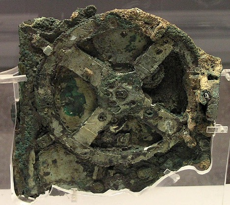
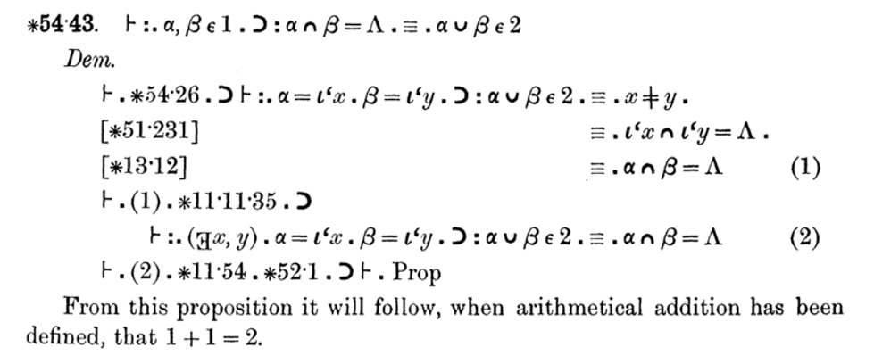

Computability Part 1: A Short History
An algorithm (/ˈælɡərɪðəm/ ) is a finite sequence of well-defined instructions, typically used to solve a class of specific problems or to perform a computation.
Ancient computers
The first computer (we know of) is the Antikythera mechanism. It was found in 1901 in a shipwreck. The device was built sometime between 100 BC and 150 BC and uses gears to predict astronomical positions of the Sun, Moon, and planets through the zodiac.

Image from Wikimedia Commons user Marsyas, CC BY 2.5
This millennia old device is a hand-powered analog computer. Humanity has been looking at automating computation for quite some time.
The father of computer science
Skipping forward a few hundred years, the famous Gottfried Wilhelm Leibniz (1646-1714) designed the first device that could perform the 4 arithmetic operations and used an internal memory. He also invented the binary system, and his Algebra of Thought is a precursor to Boolean Algebra. Leibniz is famous as a mathematician (inventing calculus independently of Isaac Newton), but some also call him the father of computer science.
After creating his arithmetic machine, Leibniz dreamt of a machine that could manipulate symbols in order to decide the truth value of mathematical statements.
The Difference Engine and the Analytical Engine
Over a century later, Charles Babbage (1791-1871) invents the Difference Engine, a mechanical calculator that can tabulate polynomial functions. Babbage created a small version of this, the Difference Engine 0, in 1822. Work on a larger version, which was supposed to enable larger calculations, was funded by the British government. Unfortunately, this did not materialize due to the manufacturing limitations of the time. It took 20 years and large amounts until the project was abandoned. The Difference Engine 1 was never completed.
During this time, Babbage started thinking about a general-purpose computer, the Analytical Engine. The Analytical Engine would include an arithmetic logic unit, control flow, and memory - components of modern electronic computers. The programming language resembled modern day assembly languages and would have been fed to the computer through punch cards. This machine was never built.
Even though the physical Analytical Engine did not materialize, several programs were created for it, both by Babbage and Ada Lovelace (1815-1852). Ada published the first algorithm for the Analytical Engine, used to compute Bernoulli numbers, and is regarded as the first programmer.
The foundational crisis of mathematics
At the beginning of the 20th century, mathematicians were looking for a proper foundation for mathematics: a set of axioms from which all theorems could be derived.
David Hilbert (1862-1943) put forward 23 problems in 1900, which heavily influenced the direction of mathematics research in the 20th century. Some of the problems have since been solved, others, like the famous Riemann hypothesis (problem 8), are still unresolved.
The 2nd problem, directly tying into the foundational crisis, was to prove that the axioms of arithmetic are consistent (meaning no contradictions can arise as theorems are derived from the axioms).
Alfred North Whitehead (1861-1947) and Bertrand Russell (1872-1970) start working on the Principia Mathematica. 3 volumes are published in 1910, 1912, and 1913. Starting with a minimum set of primitive notions, axioms, and inference rules, they deduce theorems pertaining to logic, arithmetic, set theory and so on. Famously, the proof that 1+1=2 appears on page 379 of volume 1.

Kurt Gödel (1906-1978) proves, with his incompleteness theorem (1930), that a formal system powerful enough to describe arithmetic cannot be both consistent and complete. In other words, starting from a set of axioms, if these are consistent (no contradictions can be derived), they cannot be complete (there will be true statements that cannot be derived from these axioms).
Building upon this work, in 1933, Gödel develops general recursive functions as a model of computability (more on this later).
Entscheidungsproblem and models of computability
David Hilbert proposes another challenge in 1928: the decision problem. The problem asks for an algorithm that takes a statement as an input and decides whether the statement is provable within the considered set of axioms. Note that Gödel's incompleteness theorem shows that some true statements cannot be proved from a consistent set of axioms. That doesn't mean there isn't an algorithm that can decide whether a statement is provable or not. Hilbert believed such an algorithm exists.
Alonzo Church (1903-1995) develops lambda calculus as a model of computation that uses function abstraction, application, and variable binding and substitution. Church's Theorem (1936) provides a negative answer to the decision problem, based on lambda calculus. He shows there is no computable function that can decide whether two lambda expressions are equivalent.
During the same time, Alan Turing (1912-1954) develops another model of computation: the Turing machine. This is an abstract computer consisting of an infinite tape of cells, a head that can read from a cell, write to a cell, and move left or right over the tape, and a set of rules which direct the head based on the read symbol and the current state of the machine. Turing also provides a negative answer to the decision problem during the same year as Church (1936), based on Turing machines: he shows that there is no general method to decide whether any given Turing machine halts or not (the halting problem).
Universal computability and Turing completeness
These are remarkable results: we now have proof that some problems are incomputable. More than that, we know that a Turing machine can compute anything that is computable.
The Church-Turing thesis shows that lambda calculus can be used to simulate a Turing machine. That means that lambda calculus can compute anything that a Turing machine can compute, thus the two systems have the same computability power.
In general, if a system can be used to simulate a Turing machine, this makes it Turing complete, meaning capable of computing anything that is computable.
Gödel's general recursive functions are also shown to be an equivalent model of computation (these are the functions that Turing machines can compute).
We have 3 quite different approaches to universal computability: general recursive functions, lambda calculus, and Turing machines. These turn out to all be equivalent in terms of what is possible to compute.
Turing machines, with their simple definition, are easy to simulate, thus making Turing completeness the preferred way of proving that a system is capable of universal computation.